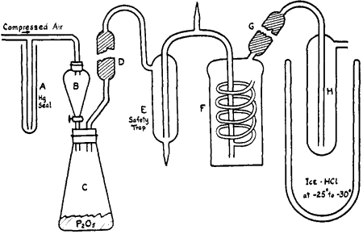

Abstract
The description of a method and apparatus is given for the rapid formation of pure anhydrous hydrogen iodide. This is generated by dropping concentrated hydriodic acid upon phosphorus pentoxide and purified by bubbling through saturated calcium iodide, drying with phosphorus pentoxide and cooling to -30°C.
Introduction
In order to prepare chloroform solutions of anhydrous hydrogen iodide needed in the synthesis of 2-butene it was necessary to develop a process by which the desired gas could be obtained readily in large quantity.
Anhydrous hydrogen iodide has been prepared by the following methods:
For the purpose desired these methods have certain disadvantages, as follows: Method (a) is time-consuming and gives a product containing iodine unless a large excess of hydrogen is used or unless the product is liquefied and the hydrogen iodide distilled from the iodine; in Method decomposition products of resin are likely contaminants of the hydrogen iodide; in Method (c) a considerable amount of phosphorus is reduced to phosphine, which is carried along in the gas stream, presumably in the form of phosphonium iodide, and explosions are liable to occur, especially at the beginning of the experiment; in Method (d), a small amount of phosphine is formed.
On the other hand, the different methods have certain advantages, as follows: by Method (a) hydrogen iodide of high purity may be prepared since both the hydrogen and iodine can without difficulty be freed of impurities, and by Methods (b), (c) and (d) a rapid evolution of hydrogen iodide may be obtained. Method (c) is the one usually employed for quantity production when a pure product is not needed, probably because the apparatus is comparatively simple, whereas Method (a) is used when a very pure product is desired. Method (b), apparently, is not generally recognized since it is mentioned only in standard reference works. It possesses obvious advantages as a rapid laboratory or lecture demonstration preparation. This method was not considered by us because of the probable difficulties involved in removing the volatile decomposition products. Method (d) was tried out and an apparatus developed by the use of which pure anhydrous hydrogen iodide could be obtained rapidly in large quantities. This last is superior to Method (c) both as regards the purity of the product and the rate of production.
Apparatus and Method
Figure 1

Approximately 150 g. of concentrated hydriodic acid, sp. gr. 1.7, was placed in a dropping funnel, B (see figure) and was allowed to drop upon 200 g. of phosphorus pentoxide contained in a 0.5 L conical flask, C, closed by a wired-on rubber stopper. A slight air pressure insured a steady flow of the acid into the generating flask. The evolved hydrogen iodide, containing traces of iodine, water and phosphine, was purified by passage through an all-glass apparatus. A glass tube, D, filled with phosphorus pentoxide removed mist produced by the vigorous reaction in the generating flask. Iodine and a part of the phosphonium iodide were taken out by a saturated solution of calcium iodide3a at 0°C contained in the bubbler, F. Water was absorbed by phosphorus pentoxide in the tube, G, and small amounts of phosphonium iodide were removed by passage through H, maintained at -25° to -30° by a cooling bath of ice and concentrated hydrochloric acid. The purified hydrogen iodide may be used as desired.
The calcium iodide solution, prepared by dissolving 200 g. of the salt in 100 g. of water, removed iodine completely. However, since anhydrous hydrogen iodide in the gaseous state and in solution, for example, in chloroform, is easily oxidized by air and rapidly decomposes when exposed to light, it was necessary to fill the apparatus with nitrogen for the first run and to protect it from light. This latter precaution is of vital importance for obtaining an iodine-free product because even weak, diffused daylight brings about decomposition. Between runs, in spite of these precautions, traces of iodine developed and for this reason it was necessary to discard the gas evolved at the beginning of each run. This formation of free iodine may have resulted in part from the presence of some air introduced while the phosphorus pentoxide supply was being replenished, even though the precaution was taken of passing a rapid stream of nitrogen through the flask before it was connected to the apparatus. Not more than 2 g. of phosphonium iodide crystallized out during the preparation of 650 g. of anhydrous hydrogen iodide. Its solubility in the calcium iodide solution is practically nil since the amount at the end of successive runs increased in proportion to the total hydrogen iodide produced. During each run there was formed in the generating flask a small amount of reddish powder, an intermediate reduction product of the phosphorus pentoxide, which was not investigated.
A saturated aqueous solution of hydrogen iodide prepared by this method gave a negative test for phosphate with ammonium molybdate.